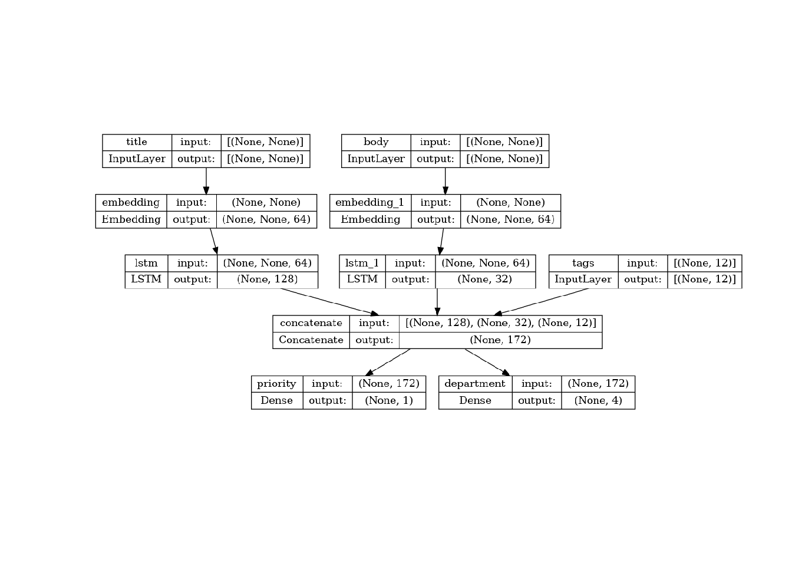

library(tensorflow)
library(keras)The Functional API
Complete guide to the functional API.
Setup
Introduction
The Keras functional API is a way to create models that are more flexible than the sequential API. The functional API can handle models with non-linear topology, shared layers, and even multiple inputs or outputs.
The main idea is that a deep learning model is usually a directed acyclic graph (DAG) of layers. So the functional API is a way to build graphs of layers.
Consider the following model:
(input: 784-dimensional vectors)
↧
[Dense (64 units, relu activation)]
↧
[Dense (64 units, relu activation)]
↧
[Dense (10 units, softmax activation)]
↧
(output: logits of a probability distribution over 10 classes)This is a basic graph with three layers. To build this model using the functional API, start by creating an input node:
inputs <- layer_input(shape = c(784))Loaded Tensorflow version 2.9.1The shape of the data is set as a 784-dimensional vector. The batch size is always omitted since only the shape of each sample is specified.
If, for example, you have an image input with a shape of (32, 32, 3), you would use:
# Just for demonstration purposes.
img_inputs <- layer_input(shape = c(32, 32, 3))The inputs that is returned contains information about the shape and dtype of the input data that you feed to your model. Here’s the shape:
inputs$shapeTensorShape([None, 784])Here’s the dtype:
inputs$dtypetf.float32You create a new node in the graph of layers by calling a layer on this inputs object:
dense <- layer_dense(units = 64, activation = "relu")
x <- dense(inputs)The “layer call” action is like drawing an arrow from “inputs” to this layer you created. You’re “passing” the inputs to the dense layer, and you get x as the output.
You can also conveniently create the layer and compose it with inputs in one step, like this:
x <- inputs %>%
layer_dense(units = 64, activation = "relu") Let’s add a few more layers to the graph of layers:
outputs <- x %>%
layer_dense(64, activation = "relu") %>%
layer_dense(10)At this point, you can create a Model by specifying its inputs and outputs in the graph of layers:
model <- keras_model(inputs = inputs, outputs = outputs,
name = "mnist_model")Let’s check out what the model summary looks like:
modelModel: "mnist_model"
____________________________________________________________________________
Layer (type) Output Shape Param #
============================================================================
input_1 (InputLayer) [(None, 784)] 0
dense_1 (Dense) (None, 64) 50240
dense_3 (Dense) (None, 64) 4160
dense_2 (Dense) (None, 10) 650
============================================================================
Total params: 55,050
Trainable params: 55,050
Non-trainable params: 0
____________________________________________________________________________You can also plot the model as a graph:
plot(model)
And, optionally, display the input and output shapes of each layer in the plotted graph:
plot(model, show_shapes = TRUE)
This figure and the code are almost identical. In the code version, the connection arrows are replaced by %>% operator.
A “graph of layers” is an intuitive mental image for a deep learning model, and the functional API is a way to create models that closely mirrors this.
Training, evaluation, and inference
Training, evaluation, and inference work exactly in the same way for models built using the functional API as for Sequential models.
The Model class offers a built-in training loop (the fit() method) and a built-in evaluation loop (the evaluate() method). Note that you can easily customize these loops to implement training routines beyond supervised learning (e.g. GANs).
Here, load the MNIST image data, reshape it into vectors, fit the model on the data (while monitoring performance on a validation split), then evaluate the model on the test data:
c(c(x_train, y_train), c(x_test, y_test)) %<-% keras::dataset_mnist()
x_train <- array_reshape(x_train, c(60000, 784)) / 255
x_test <- array_reshape(x_test, c(10000, 784)) / 255
model %>% compile(
loss = loss_sparse_categorical_crossentropy(from_logits = TRUE),
optimizer = optimizer_rmsprop(),
metrics = "accuracy"
)
history <- model %>% fit(
x_train, y_train, batch_size = 64, epochs = 2, validation_split = 0.2)
test_scores <- model %>% evaluate(x_test, y_test, verbose = 2)
print(test_scores) loss accuracy
0.1323348 0.9618000 For further reading, see the training and evaluation guide.
Save and serialize
Saving the model and serialization work the same way for models built using the functional API as they do for Sequential models. The standard way to save a functional model is to call save_model_tf() to save the entire model as a single file. You can later recreate the same model from this file, even if the code that built the model is no longer available.
This saved file includes the: - model architecture - model weight values (that were learned during training) - model training config, if any (as passed to compile) - optimizer and its state, if any (to restart training where you left off)
path_to_my_model <- tempfile()
save_model_tf(model, path_to_my_model)
rm(model)
# Recreate the exact same model purely from the file:
model <- load_model_tf(path_to_my_model)For details, read the model serialization & saving guide.
Use the same graph of layers to define multiple models
In the functional API, models are created by specifying their inputs and outputs in a graph of layers. That means that a single graph of layers can be used to generate multiple models.
In the example below, you use the same stack of layers to instantiate two models: an encoder model that turns image inputs into 16-dimensional vectors, and an end-to-end autoencoder model for training.
encoder_input <- layer_input(shape = c(28, 28, 1),
name = "img")
encoder_output <- encoder_input %>%
layer_conv_2d(16, 3, activation = "relu") %>%
layer_conv_2d(32, 3, activation = "relu") %>%
layer_max_pooling_2d(3) %>%
layer_conv_2d(32, 3, activation = "relu") %>%
layer_conv_2d(16, 3, activation = "relu") %>%
layer_global_max_pooling_2d()
encoder <- keras_model(encoder_input, encoder_output,
name = "encoder")
encoderModel: "encoder"
____________________________________________________________________________
Layer (type) Output Shape Param #
============================================================================
img (InputLayer) [(None, 28, 28, 1)] 0
conv2d_3 (Conv2D) (None, 26, 26, 16) 160
conv2d_2 (Conv2D) (None, 24, 24, 32) 4640
max_pooling2d (MaxPooling2D) (None, 8, 8, 32) 0
conv2d_1 (Conv2D) (None, 6, 6, 32) 9248
conv2d (Conv2D) (None, 4, 4, 16) 4624
global_max_pooling2d (GlobalMaxP (None, 16) 0
ooling2D)
============================================================================
Total params: 18,672
Trainable params: 18,672
Non-trainable params: 0
____________________________________________________________________________decoder_output <- encoder_output %>%
layer_reshape(c(4, 4, 1)) %>%
layer_conv_2d_transpose(16, 3, activation = "relu") %>%
layer_conv_2d_transpose(32, 3, activation = "relu") %>%
layer_upsampling_2d(3) %>%
layer_conv_2d_transpose(16, 3, activation = "relu") %>%
layer_conv_2d_transpose(1, 3, activation = "relu")
autoencoder <- keras_model(encoder_input, decoder_output,
name = "autoencoder")
autoencoderModel: "autoencoder"
____________________________________________________________________________
Layer (type) Output Shape Param #
============================================================================
img (InputLayer) [(None, 28, 28, 1)] 0
conv2d_3 (Conv2D) (None, 26, 26, 16) 160
conv2d_2 (Conv2D) (None, 24, 24, 32) 4640
max_pooling2d (MaxPooling2D) (None, 8, 8, 32) 0
conv2d_1 (Conv2D) (None, 6, 6, 32) 9248
conv2d (Conv2D) (None, 4, 4, 16) 4624
global_max_pooling2d (GlobalMaxP (None, 16) 0
ooling2D)
reshape (Reshape) (None, 4, 4, 1) 0
conv2d_transpose_3 (Conv2DTransp (None, 6, 6, 16) 160
ose)
conv2d_transpose_2 (Conv2DTransp (None, 8, 8, 32) 4640
ose)
up_sampling2d (UpSampling2D) (None, 24, 24, 32) 0
conv2d_transpose_1 (Conv2DTransp (None, 26, 26, 16) 4624
ose)
conv2d_transpose (Conv2DTranspos (None, 28, 28, 1) 145
e)
============================================================================
Total params: 28,241
Trainable params: 28,241
Non-trainable params: 0
____________________________________________________________________________Here, the decoding architecture is strictly symmetrical to the encoding architecture, so the output shape is the same as the input shape (28, 28, 1).
The reverse of a Conv2D layer is a Conv2DTranspose layer, and the reverse of a MaxPooling2D layer is an UpSampling2D layer.
All models are callable, just like layers
You can treat any model as if it were a layer by invoking it on an Input or on the output of another layer. By calling a model you aren’t just reusing the architecture of the model, you’re also reusing its weights.
To see this in action, here’s a different take on the autoencoder example that creates an encoder model, a decoder model, and chains them in two calls to obtain the autoencoder model:
encoder_input <- layer_input(shape = c(28, 28, 1), name = "original_img")
encoder_output <- encoder_input %>%
layer_conv_2d(16, 3, activation = "relu") %>%
layer_conv_2d(32, 3, activation = "relu") %>%
layer_max_pooling_2d(3) %>%
layer_conv_2d(32, 3, activation = "relu") %>%
layer_conv_2d(16, 3, activation = "relu") %>%
layer_global_max_pooling_2d()
encoder <- keras_model(encoder_input, encoder_output, name = "encoder")
encoderModel: "encoder"
____________________________________________________________________________
Layer (type) Output Shape Param #
============================================================================
original_img (InputLayer) [(None, 28, 28, 1)] 0
conv2d_7 (Conv2D) (None, 26, 26, 16) 160
conv2d_6 (Conv2D) (None, 24, 24, 32) 4640
max_pooling2d_1 (MaxPooling2D) (None, 8, 8, 32) 0
conv2d_5 (Conv2D) (None, 6, 6, 32) 9248
conv2d_4 (Conv2D) (None, 4, 4, 16) 4624
global_max_pooling2d_1 (GlobalMa (None, 16) 0
xPooling2D)
============================================================================
Total params: 18,672
Trainable params: 18,672
Non-trainable params: 0
____________________________________________________________________________decoder_input <- layer_input(shape = c(16), name = "encoded_img")
decoder_output <- decoder_input %>%
layer_reshape(c(4, 4, 1)) %>%
layer_conv_2d_transpose(16, 3, activation = "relu") %>%
layer_conv_2d_transpose(32, 3, activation = "relu") %>%
layer_upsampling_2d(3) %>%
layer_conv_2d_transpose(16, 3, activation = "relu") %>%
layer_conv_2d_transpose(1, 3, activation = "relu")
decoder <- keras_model(decoder_input, decoder_output,
name = "decoder")
decoderModel: "decoder"
____________________________________________________________________________
Layer (type) Output Shape Param #
============================================================================
encoded_img (InputLayer) [(None, 16)] 0
reshape_1 (Reshape) (None, 4, 4, 1) 0
conv2d_transpose_7 (Conv2DTransp (None, 6, 6, 16) 160
ose)
conv2d_transpose_6 (Conv2DTransp (None, 8, 8, 32) 4640
ose)
up_sampling2d_1 (UpSampling2D) (None, 24, 24, 32) 0
conv2d_transpose_5 (Conv2DTransp (None, 26, 26, 16) 4624
ose)
conv2d_transpose_4 (Conv2DTransp (None, 28, 28, 1) 145
ose)
============================================================================
Total params: 9,569
Trainable params: 9,569
Non-trainable params: 0
____________________________________________________________________________autoencoder_input <- layer_input(shape = c(28, 28, 1), name = "img")
encoded_img <- encoder(autoencoder_input)
decoded_img <- decoder(encoded_img)
autoencoder <- keras_model(autoencoder_input, decoded_img,
name = "autoencoder")
autoencoderModel: "autoencoder"
____________________________________________________________________________
Layer (type) Output Shape Param #
============================================================================
img (InputLayer) [(None, 28, 28, 1)] 0
encoder (Functional) (None, 16) 18672
decoder (Functional) (None, 28, 28, 1) 9569
============================================================================
Total params: 28,241
Trainable params: 28,241
Non-trainable params: 0
____________________________________________________________________________As you can see, the model can be nested: a model can contain sub-models (since a model is just like a layer). A common use case for model nesting is ensembling. For example, here’s how to ensemble a set of models into a single model that averages their predictions:
get_model <- function() {
inputs <- layer_input(shape = c(128))
outputs <- inputs %>% layer_dense(1)
keras_model(inputs, outputs)
}
model1 <- get_model()
model2 <- get_model()
model3 <- get_model()
inputs <- layer_input(shape = c(128))
y1 <- model1(inputs)
y2 <- model2(inputs)
y3 <- model3(inputs)
outputs <- layer_average(list(y1, y2, y3))
ensemble_model <- keras_model(inputs = inputs, outputs = outputs)Manipulate complex graph topologies
Models with multiple inputs and outputs
The functional API makes it easy to manipulate multiple inputs and outputs. This cannot be handled with the Sequential API.
For example, if you’re building a system for ranking customer issue tickets by priority and routing them to the correct department, then the model will have three inputs:
- the title of the ticket (text input),
- the text body of the ticket (text input), and
- any tags added by the user (categorical input)
This model will have two outputs:
- the priority score between 0 and 1 (scalar sigmoid output), and
- the department that should handle the ticket (softmax output over the set of departments).
You can build this model in a few lines with the functional API:
num_tags <- 12 # Number of unique issue tags
num_words <- 10000 # Size of vocabulary obtained when preprocessing text data
num_departments <- 4 # Number of departments for predictions
title_input <- layer_input(shape = c(NA), name = "title") # Variable-length sequence of ints
body_input <- layer_input(shape = c(NA), name = "body") # Variable-length sequence of ints
tags_input <- layer_input(shape = c(num_tags), name = "tags") # Binary vectors of size `num_tags`
# Embed each word in the title into a 64-dimensional vector
title_features <- title_input %>% layer_embedding(num_words, 64)
# Embed each word in the text into a 64-dimensional vector
body_features <- body_input %>% layer_embedding(num_words, 64)
# Reduce sequence of embedded words in the title into a single 128-dimensional vector
title_features <- title_features %>% layer_lstm(128)
# Reduce sequence of embedded words in the body into a single 32-dimensional vector
body_features <- body_features %>% layer_lstm(32)
# Merge all available features into a single large vector via concatenation
x <- layer_concatenate(title_features, body_features, tags_input)
# Stick a logistic regression for priority prediction on top of the features
priority_pred <- x %>% layer_dense(1, name = "priority")
# Stick a department classifier on top of the features
department_pred <- x %>% layer_dense(num_departments, name = "department")
# Instantiate an end-to-end model predicting both priority and department
model <- keras_model(
inputs <- list(title_input, body_input, tags_input),
outputs <- list(priority_pred, department_pred)
)Now plot the model:
plot(model, show_shapes = TRUE)
When compiling this model, you can assign different losses to each output. You can even assign different weights to each loss – to modulate their contribution to the total training loss.
model %>% compile(
optimizer = optimizer_rmsprop(1e-3),
loss = list(
loss_binary_crossentropy(from_logits = TRUE),
loss_categorical_crossentropy(from_logits = TRUE)
),
loss_weights <- c(1, 0.2)
)Since the output layers have different names, you could also specify the losses and loss weights with the corresponding layer names:
model %>% compile(
optimizer = optimizer_rmsprop(1e-3),
loss = list(
priority = loss_binary_crossentropy(from_logits = TRUE),
department = loss_categorical_crossentropy(from_logits = TRUE)
),
loss_weights = c(priority = 1.0, department = 0.2),
)Train the model by passing lists of NumPy arrays of inputs and targets:
# some helpers to generate dummy input data
random_uniform_array <- function(dim)
array(runif(prod(dim)), dim)
random_vectorized_array <- function(num_words, dim)
array(sample(0:(num_words - 1), prod(dim), replace = TRUE), dim)
# Dummy input data
title_data <- random_vectorized_array(num_words, c(1280, 10))
body_data <- random_vectorized_array(num_words, c(1280, 100))
tags_data <- random_vectorized_array(2, c(1280, num_tags))
# storage.mode(tags_data) <- "double" # from integer
# Dummy target data
priority_targets <- random_uniform_array(c(1280, 1))
dept_targets <- random_vectorized_array(2, c(1280, num_departments))
model %>% fit(
list(title = title_data, body = body_data, tags = tags_data),
list(priority = priority_targets, department = dept_targets),
epochs = 2,
batch_size = 32
)When calling fit with a tfdataset object, it should yield either a tuple of lists like tuple(list(title_data, body_data, tags_data), list(priority_targets, dept_targets)) or a tuple of named lists like tuple(list(title = title_data, body = body_data, tags = tags_data), list(priority= priority_targets, department= dept_targets)).
For more detailed explanation, refer to the training and evaluation guide.
A toy ResNet model
In addition to models with multiple inputs and outputs, the functional API makes it easy to manipulate non-linear connectivity topologies – these are models with layers that are not connected sequentially, which the Sequential API cannot handle.
A common use case for this is residual connections. Let’s build a toy ResNet model for CIFAR10 to demonstrate this:
inputs <- layer_input(shape = c(32, 32, 3), name = "img")
block_1_output <- inputs %>%
layer_conv_2d(32, 3, activation = "relu") %>%
layer_conv_2d(64, 3, activation = "relu") %>%
layer_max_pooling_2d(3)
block_2_output <- block_1_output %>%
layer_conv_2d(64, 3, activation = "relu", padding = "same") %>%
layer_conv_2d(64, 3, activation = "relu", padding = "same") %>%
layer_add(block_1_output)
block_3_output <- block_2_output %>%
layer_conv_2d(64, 3, activation = "relu", padding = "same") %>%
layer_conv_2d(64, 3, activation = "relu", padding = "same") %>%
layer_add(block_2_output)
outputs <- block_3_output %>%
layer_conv_2d(64, 3, activation = "relu") %>%
layer_global_average_pooling_2d() %>%
layer_dense(256, activation = "relu") %>%
layer_dropout(0.5) %>%
layer_dense(10)
model <- keras_model(inputs, outputs, name = "toy_resnet")
modelModel: "toy_resnet"
____________________________________________________________________________
Layer (type) Output Shape Param # Connected to
============================================================================
img (InputLayer) [(None, 32, 32 0 []
, 3)]
conv2d_9 (Conv2D) (None, 30, 30, 896 ['img[0][0]']
32)
conv2d_8 (Conv2D) (None, 28, 28, 18496 ['conv2d_9[0][0]']
64)
max_pooling2d_2 (MaxPoo (None, 9, 9, 6 0 ['conv2d_8[0][0]']
ling2D) 4)
conv2d_11 (Conv2D) (None, 9, 9, 6 36928 ['max_pooling2d_2[0][0]']
4)
conv2d_10 (Conv2D) (None, 9, 9, 6 36928 ['conv2d_11[0][0]']
4)
add (Add) (None, 9, 9, 6 0 ['conv2d_10[0][0]',
4) 'max_pooling2d_2[0][0]']
conv2d_13 (Conv2D) (None, 9, 9, 6 36928 ['add[0][0]']
4)
conv2d_12 (Conv2D) (None, 9, 9, 6 36928 ['conv2d_13[0][0]']
4)
add_1 (Add) (None, 9, 9, 6 0 ['conv2d_12[0][0]',
4) 'add[0][0]']
conv2d_14 (Conv2D) (None, 7, 7, 6 36928 ['add_1[0][0]']
4)
global_average_pooling2 (None, 64) 0 ['conv2d_14[0][0]']
d (GlobalAveragePooling
2D)
dense_8 (Dense) (None, 256) 16640 ['global_average_pooling2d
[0][0]']
dropout (Dropout) (None, 256) 0 ['dense_8[0][0]']
dense_7 (Dense) (None, 10) 2570 ['dropout[0][0]']
============================================================================
Total params: 223,242
Trainable params: 223,242
Non-trainable params: 0
____________________________________________________________________________Plot the model:
plot(model, show_shapes = TRUE)
Now train the model:
c(c(x_train, y_train), c(x_test, y_test)) %<-% dataset_cifar10()
x_train <- x_train / 255
x_test <- x_test / 255
y_train <- to_categorical(y_train, 10)
y_test <- to_categorical(y_test, 10)
model %>% compile(
optimizer = optimizer_rmsprop(1e-3),
loss = loss_categorical_crossentropy(from_logits = TRUE),
metrics = "acc"
)
# We restrict the data to the first 1000 samples so as to limit execution time
# for this guide. Try to train on the entire dataset until convergence!
model %>% fit(
x_train[1:1000, , , ],
y_train[1:1000, ],
batch_size = 64,
epochs = 1,
validation_split = 0.2
)Extract and reuse nodes in the graph of layers
Because the graph of layers you are manipulating is a static data structure, it can be accessed and inspected. And this is how you are able to plot functional models as images.
This also means that you can access the activations of intermediate layers (“nodes” in the graph) and reuse them elsewhere – which is very useful for something like feature extraction.
Let’s look at an example. This is a VGG19 model with weights pretrained on ImageNet:
vgg19 <- application_vgg19()And these are the intermediate activations of the model, obtained by querying the graph data structure:
features_list <- lapply(vgg19$layers, \(layer) layer$output)Use these features to create a new feature-extraction model that returns the values of the intermediate layer activations:
feat_extraction_model <- keras_model(inputs = vgg19$input,
outputs = features_list)
img <- random_uniform_array(c(1, 224, 224, 3))
extracted_features <- feat_extraction_model(img)This comes in handy for tasks like neural style transfer, among other things.
Extend the API using custom layers
tf$keras includes a wide range of built-in layers, for example:
- Convolutional layers:
Conv1D,Conv2D,Conv3D,Conv2DTranspose - Pooling layers:
MaxPooling1D,MaxPooling2D,MaxPooling3D,AveragePooling1D - RNN layers:
GRU,LSTM,ConvLSTM2D BatchNormalization,Dropout,Embedding, etc.
But if you don’t find what you need, it’s easy to extend the API by creating your own layers. All layers subclass the Layer class and implement:
callmethod, that specifies the computation done by the layer.buildmethod, that creates the weights of the layer (this is just a style convention since you can create weights in__init__, as well).
To learn more about creating layers from scratch, read custom layers and models guide.
The following is a basic implementation of layer_dense():
library(tensorflow)
library(keras)
layer_custom_dense <- new_layer_class(
"CustomDense",
initialize = function(units = 32) {
super$initialize()
self$units = as.integer(units)
},
build = function(input_shape) {
self$w <- self$add_weight(
shape = shape(tail(input_shape, 1), self$units),
initializer = "random_normal",
trainable = TRUE
)
self$b <- self$add_weight(
shape = shape(self$units),
initializer = "random_normal",
trainable = TRUE
)
},
call = function(inputs) {
tf$matmul(inputs, self$w) + self$b
}
)
inputs <- layer_input(c(4))
outputs <- inputs %>% layer_custom_dense(10)
model <- keras_model(inputs, outputs)For serialization support in your custom layer, define a get_config method that returns the constructor arguments of the layer instance:
layer_custom_dense <- new_layer_class(
"CustomDense",
initialize = function(units = 32) {
super$initialize()
self$units <- as.integer(units)
},
build = function(input_shape) {
self$w <-
self$add_weight(
shape = shape(tail(input_shape, 1), self$units),
initializer = "random_normal",
trainable = TRUE
)
self$b <- self$add_weight(
shape = shape(self$units),
initializer = "random_normal",
trainable = TRUE
)
},
call = function(inputs) {
tf$matmul(inputs, self$w) + self$b
},
get_config = function() {
list(units = self$units)
}
)
inputs <- layer_input(c(4))
outputs <- inputs %>% layer_custom_dense(10)
model <- keras_model(inputs, outputs)
config <- model %>% get_config()
new_model <- from_config(config, custom_objects = list(layer_custom_dense))Optionally, implement the class method from_config(class_constructor, config) which is used when recreating a layer instance given its config. The default implementation of from_config is approximately:
from_config <- function(layer_constructor, config)
do.call(layer_constructor, config)When to use the functional API
Should you use the Keras functional API to create a new model, or just subclass the Model class directly? In general, the functional API is higher-level, easier and safer, and has a number of features that subclassed models do not support.
However, model subclassing provides greater flexibility when building models that are not easily expressible as directed acyclic graphs of layers. For example, you could not implement a Tree-RNN with the functional API and would have to subclass Model directly.
For an in-depth look at the differences between the functional API and model subclassing, read What are Symbolic and Imperative APIs in TensorFlow 2.0?.
Functional API strengths:
The following properties are also true for Sequential models (which are also data structures), but are not true for subclassed models (which are R code, not data structures).
Less verbose
There is no super$initialize(...), no call <- function(...) { }, etc.
Compare:
inputs <- layer_input(shape = c(32))
outputs <- inputs %>%
layer_dense(64, activation = 'relu') %>%
layer_dense(10)
mlp <- keras_model(inputs, outputs)With the subclassed version:
MLP <- new_model_class(
classname = "MLP",
initialize = function(...) {
super$initialize(...)
self$dense_1 <- layer_dense(units = 64, activation = 'relu')
self$dense_2 <- layer_dense(units = 10)
},
call = function(inputs) {
inputs %>%
self$dense_1() %>%
self$dense_2()
}
)
# Instantiate the model.
mlp <- MLP()
# Necessary to create the model's state.
# The model doesn't have a state until it's called at least once.
invisible(mlp(tf$zeros(shape(1, 32))))Model validation while defining its connectivity graph
In the functional API, the input specification (shape and dtype) is created in advance (using layer_input). Every time you call a layer, the layer checks that the specification passed to it matches its assumptions, and it will raise a helpful error message if not.
This guarantees that any model you can build with the functional API will run. All debugging – other than convergence-related debugging – happens statically during the model construction and not at execution time. This is similar to type checking in a compiler.
A functional model is plottable and inspectable
You can plot the model as a graph, and you can easily access intermediate nodes in this graph. For example, to extract and reuse the activations of intermediate layers (as seen in a previous example):
features_list <- lapply(vgg19$layers, \(layer) layer$output)
feat_extraction_model <- keras_model(inputs = vgg19$input,
outputs = features_list)A functional model can be serialized or cloned
Because a functional model is a data structure rather than a piece of code, it is safely serializable and can be saved as a single file that allows you to recreate the exact same model without having access to any of the original code. See the serialization & saving guide.
To serialize a subclassed model, it is necessary for the implementer to specify a get_config() and from_config() method at the model level.
Functional API weakness:
It does not support dynamic architectures
The functional API treats models as DAGs of layers. This is true for most deep learning architectures, but not all – for example, recursive networks or Tree RNNs do not follow this assumption and cannot be implemented in the functional API.
Mix-and-match API styles
Choosing between the functional API or Model subclassing isn’t a binary decision that restricts you into one category of models. All models in the tf$keras API can interact with each other, whether they’re Sequential models, functional models, or subclassed models that are written from scratch.
You can always use a functional model or Sequential model as part of a subclassed model or layer:
units <- 32L
timesteps <- 10L
input_dim <- 5L
# Define a Functional model
inputs <- layer_input(c(NA, units))
outputs <- inputs %>%
layer_global_average_pooling_1d() %>%
layer_dense(1)
model <- keras_model(inputs, outputs)
layer_custom_rnn <- new_layer_class(
"CustomRNN",
initialize = function() {
super$initialize()
self$units <- units
self$projection_1 <-
layer_dense(units = units, activation = "tanh")
self$projection_2 <-
layer_dense(units = units, activation = "tanh")
# Our previously-defined Functional model
self$classifier <- model
},
call = function(inputs) {
message("inputs shape: ", format(inputs$shape))
c(batch_size, timesteps, channels) %<-% dim(inputs)
outputs <- vector("list", timesteps)
state <- tf$zeros(shape(batch_size, self$units))
for (t in 1:timesteps) {
# iterate over each time_step
outputs[[t]] <- state <-
inputs[, t, ] %>%
self$projection_1() %>%
{ . + self$projection_2(state) }
}
features <- tf$stack(outputs, axis = 1L) # axis is 1-based
message("features shape: ", format(features$shape))
self$classifier(features)
}
)
layer_custom_rnn(tf$zeros(shape(1, timesteps, input_dim)))inputs shape: (1, 10, 5)features shape: (1, 10, 32)You can use any subclassed layer or model in the functional API as long as it implements a call method that follows one of the following patterns:
call(inputs, ..., training = NULL, mask = NULL)– Whereinputsis a tensor or a nested structure of tensors (e.g. a list of tensors), and where optional named argumentstrainingandmaskcan be present.are non-tensor arguments (non-inputs).
call(self, inputs, training = NULL, **kwargs)– Wheretrainingis a boolean indicating whether the layer should behave in training mode and inference mode.call(self, inputs, mask = NULL, **kwargs)– Wheremaskis a boolean mask tensor (useful for RNNs, for instance).call(self, inputs, training = NULL, mask = NULL, **kwargs)– Of course, you can have both masking and training-specific behavior at the same time.
Additionally, if you implement the get_config method on your custom Layer or model, the functional models you create will still be serializable and cloneable.
Here’s a quick example of a custom RNN, written from scratch, being used in a functional model:
units <- 32
timesteps <- 10
input_dim <- 5
batch_size <- 16
layer_custom_rnn <- new_layer_class(
"CustomRNN",
initialize = function() {
super$initialize()
self$units <- units
self$projection_1 <- layer_dense(units = units, activation = "tanh")
self$projection_2 <- layer_dense(units = units, activation = "tanh")
self$classifier <- layer_dense(units = 1)
},
call = function(inputs) {
c(batch_size, timesteps, channels) %<-% dim(inputs)
outputs <- vector("list", timesteps)
state <- tf$zeros(shape(batch_size, self$units))
for (t in 1:timesteps) {
# iterate over each time_step
outputs[[t]] <- state <-
inputs[, t, ] %>%
self$projection_1() %>%
{ . + self$projection_2(state) }
}
features <- tf$stack(outputs, axis = 1L) # axis arg is 1-based
self$classifier(features)
}
)
# Note that you specify a static batch size for the inputs with the `batch_shape`
# arg, because the inner computation of `CustomRNN` requires a static batch size
# (when you create the `state` zeros tensor).
inputs <- layer_input(batch_shape = c(batch_size, timesteps, input_dim))
outputs <- inputs %>%
layer_conv_1d(32, 3) %>%
layer_custom_rnn()
model <- keras_model(inputs, outputs)
model(tf$zeros(shape(1, 10, 5)))tf.Tensor(
[[[0.]
[0.]
[0.]
[0.]
[0.]
[0.]
[0.]
[0.]]], shape=(1, 8, 1), dtype=float32)